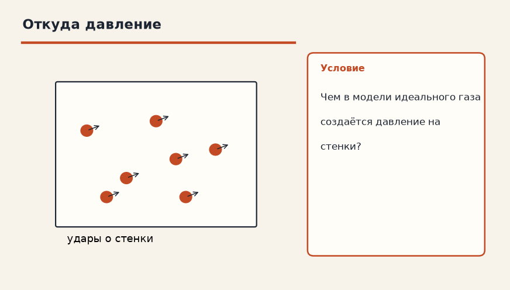
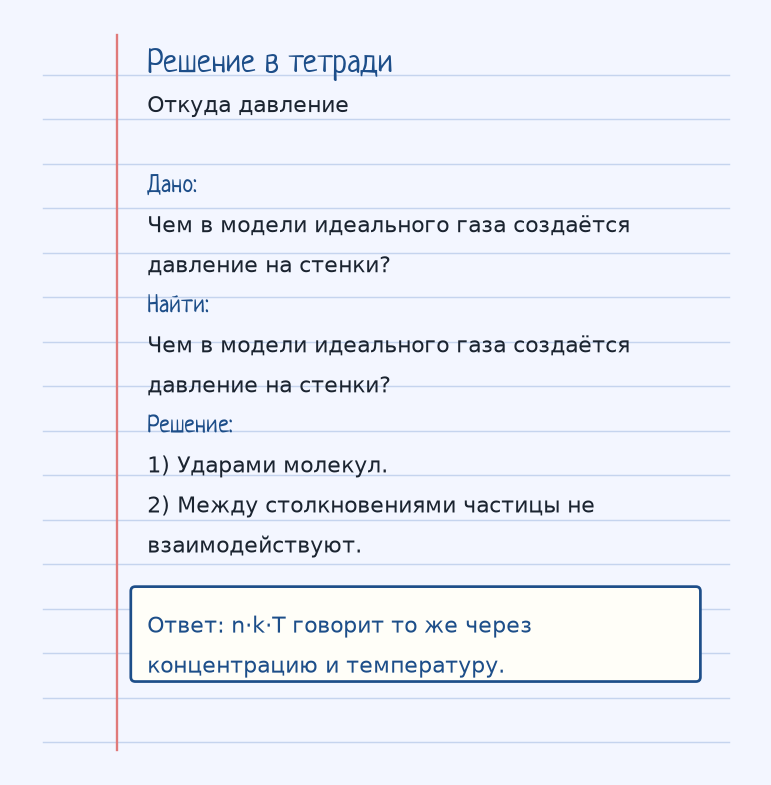
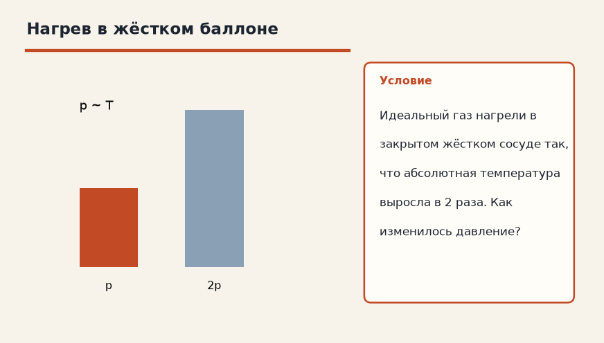
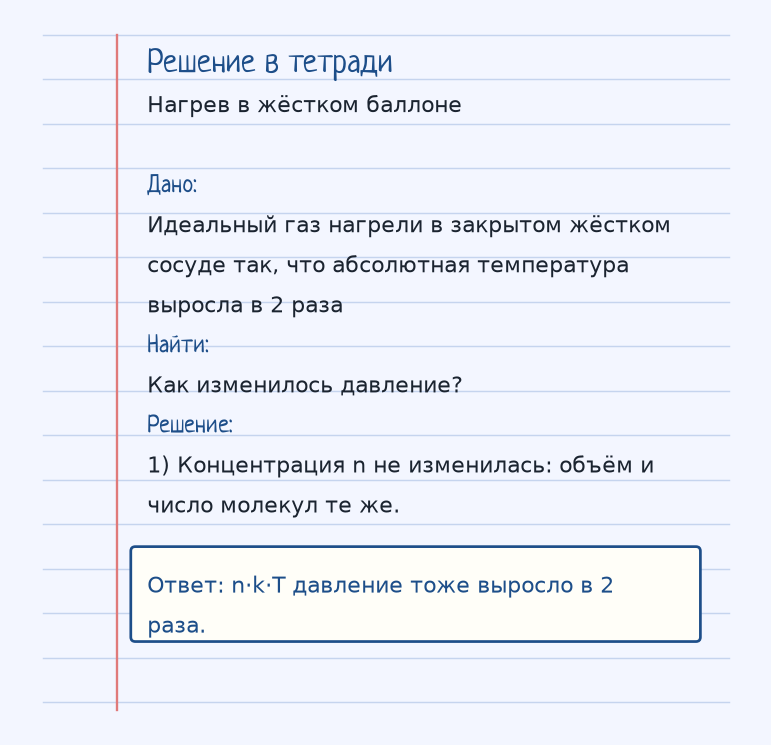

Тема «Идеальный газ»: физический смысл, единицы величин, типичные ошибки и два разобранных примера.

Схема к условию.
Физический смысл
Модель газа, где молекулы — это упругие шарики, которые не взаимодействуют друг с другом (кроме ударов). Все реальные газы при нормальных условиях ведут себя как идеальные.
Идеальный газ — модель, а не «особенно хороший воздух». Молекулы в ней — упругие шарики. Между ударами они не притягиваются и не отталкиваются, объёмом самих шариков часто пренебрегают. При обычных условиях воздух, азот, водород ведут себя близко к этой модели.
Давление на стенку рождается ударами. Основное уравнение МКТ связывает его со скоростью: p = (1/3)·n·m₀·v̄². Та же величина равна p = n·k·T: чем гуще молекулы (больше n) и чем выше температура, тем сильнее давление.
n — это концентрация, штук в кубометре, m₀ — масса одной молекулы, не моля. Если газ нагреть в жёстком баллоне, n не меняется, T растёт, и давление растёт вместе с T.
Формула и единицы
p = (1/3) · n · m₀ · v̄² = n · k · T
n — концентрация молекул (шт/м³), m₀ — масса одной молекулы.
n — концентрация (1/м³), m₀ — масса одной молекулы, v̄² — средний квадрат скорости, k — постоянная Больцмана.
Пояснение
Шарики в коробке, которые не липнут друг к другу и только стучат по стенкам. Чем чаще и злее удары, тем выше давление.
Типичные ошибки
Не подставляй в m₀ молярную массу. m₀ — масса одной молекулы. И не ищи в идеальном газе потенциальную энергию взаимодействия: её в модели нет.
Разобранные примеры. Решение каждого открывается отдельно.
Разбор 1
Откуда давление
Чем в модели идеального газа создаётся давление на стенки?
На схеме только условие.
Порядок записи: данные, единицы СИ, искомая величина, ход решения, ответ.
Дано. Чем в модели идеального газа создаётся давление на стенки?
В СИ.
Найти. Чем в модели идеального газа создаётся давление на стенки?
Решение.
Ударами молекул.
Между столкновениями частицы не взаимодействуют.
n·k·T говорит то же через концентрацию и температуру.

Разбор 2
Нагрев в жёстком баллоне
Идеальный газ нагрели в закрытом жёстком сосуде так, что абсолютная температура выросла в 2 раза. Как изменилось давление?

На схеме только условие.
Порядок записи: данные, единицы СИ, искомая величина, ход решения, ответ.
Дано. Идеальный газ нагрели в закрытом жёстком сосуде так, что абсолютная температура выросла в 2 раза
В СИ.
Найти. Как изменилось давление?
Решение.
Концентрация n не изменилась: объём и число молекул те же.
n·k·T давление тоже выросло в 2 раза.

Разбор 3
Давление и температура
В жёстком баллоне концентрацию газа не меняли, абсолютную температуру увеличили в 1,5 раза. Как изменилось давление?
На схеме только условие.
Порядок записи: данные, единицы СИ, искомая величина, ход решения, ответ.
Дано. V = const, n = const, T₂ = 1,5 T₁
В СИ.
p = n k T.
Найти. p₂/p₁
Решение.
p пропорционально T.
Давление выросло в 1,5 раза.
Выросло в 1,5 раза.
Разбор 4
Концентрация
Температуру оставили прежней, концентрацию молекул увеличили в 2 раза. Как изменилось давление?
На схеме только условие.
Порядок записи: данные, единицы СИ, искомая величина, ход решения, ответ.
Дано. T = const, n₂ = 2 n₁
В СИ.
p = n k T.
Найти. p
Решение.
Давление выросло в 2 раза.
Выросло в 2 раза.
Разбор 5
Масса молекулы
Что обозначает m₀ в уравнении p = (1/3) n m₀ v²?
На схеме только условие.
Порядок записи: данные, единицы СИ, искомая величина, ход решения, ответ.
Дано. Уравнение идеального газа
В СИ.
m₀ не молярная масса.
Найти. Смысл
Решение.
m₀ — масса одной молекулы.
Масса одной молекулы.
Разбор 6
Между ударами
Учитывает ли модель идеального газа притяжение молекул между ударами о стенку?
На схеме только условие.
Порядок записи: данные, единицы СИ, искомая величина, ход решения, ответ.
Дано. Определение идеального газа
В СИ.
Потенциальной энергией взаимодействия пренебрегают.
Найти. Ответ
Решение.
Между ударами молекулы в модели не взаимодействуют.
Нет.
Разбор 7
Удары
Чем создаётся давление идеального газа на стенку?
На схеме только условие.
Порядок записи: данные, единицы СИ, искомая величина, ход решения, ответ.